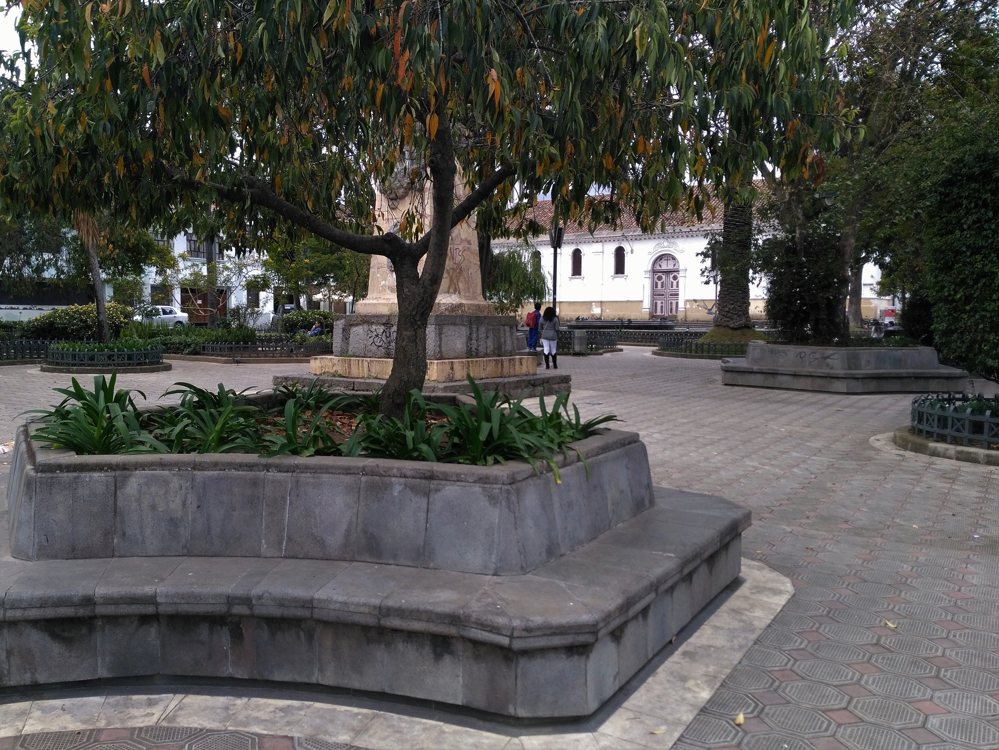
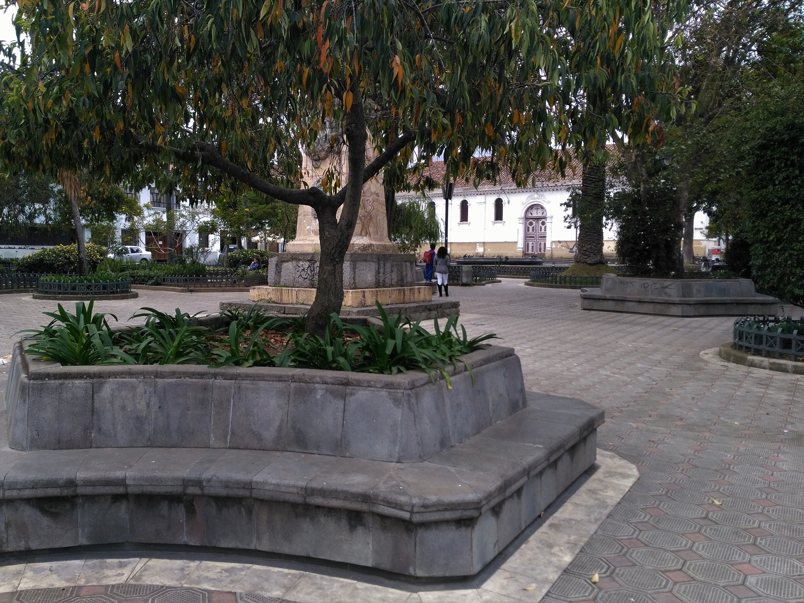
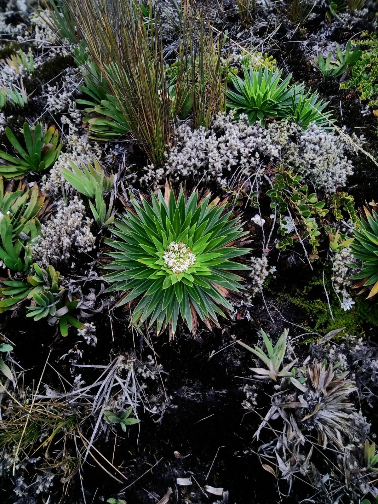
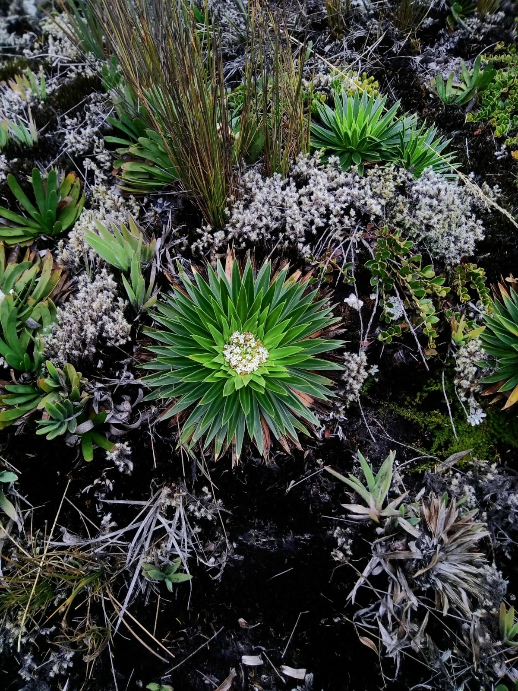

Cuenca et le parc de Cajas
La petite ville coloniale qui fait plaisir
L'arrivée en Equateur
Nouveau pays, nouvelle dynamique, monnaie, ambiance ... Heureusement, on reste sur de l'espagnol, qu'on commence à gérer. Enfin c'était ce qu'on croyait, c'était sans compter sur l'accent mâché équatorien. Je crois qu'on a jamais autant fait répéter les gens. Et puis au fur et à mesure on s'y est faits, c'est comme pour tout.
Donc après le départ de Cusco nous avons fait :
- 26h de bus jusque Lima,
- Une pause d'une nuit à Lima,
- 24 h de bus jusque Tumbes (quasi à la frontière),
- 1h de bus avec passage de frontière jusque Huaquillas
- 5/6h de bus jusque Cuenca
Encore une fois, on était de première fraîcheur ! En plus on arrive dans notre auberge avec un français avec qui nous avons traversé, et là, bug de leur côté des réservations, on a pas de chambre mais un dortoir. Eclatés littéralement par la fatigue, on va se coucher, mais demain, on se barre !
Cuenca, une ville habitable
Le lendemain, un peu plus réveillés, on change donc d'hôtel et on part à la découverte de Cuenca. Et quelle découverte !! C'est pas bien compliqué, c'est la première ville du voyage où je me verrai bien vivre. Bon j'ai peut être pensé ça pour Cusco, mais là, c'est bien plus chouette pour y vivre ! La ville possède comme beaucoup un passé colonial espagnol et les bâtiments sont magnifiques. Le centre est extrémement agréable, avec plein de petites rues, des places arborées, et des cours cachées abritant de petits restos. La cathédrale, récente, n'est pas achevée pour un problème de structure, mais reste splendide. Elle est en pierre, avec des dômes blancs et bleus. Il y a également un grande influence art déco. Et les gens sont paisibles, il y a peu de circulation, on y mange bien.
En plus, il y avait une sorte de festival de la patisserie et des bonbons, et il y avait des dizaines d'étals pendant 2 jours. Le marché couvert était comme d'habitude une vraie mine de fruits, légumes et graines en tout genre, ainsi que de bons petits plats. Enfin, le marché aux fleurs, intimiste, situé sur le côté de la cathédrale est so cute !
Bref, tout pour plaire.
Donc premier jour, visite et découverte de la ville, petit resto tranquille végétarien, marché et prise de contact multiple avec les habitants. "Les vacances quoi !" diraient les mauvaises langues.
Guaraceo et pas Choreleg
Le jour d'après, nous sommes partis en direction des petits villages de Gualaceo et de Chordeleg. Enfin presque. Finalement nous n'avons passé l'après midi qu'à Gualaceo. On nous avait conseillé ces villages comme une excursion sympa à partir de Cuenca, pour toute la production artisanale ainsi que leurs thermes. Malheuresement, on est passé à côté. Nous sommes arrivés à midi à Gualaceo, avons cherché en vain l'artisanat, et les thermes (une structure type piscine fermée trouvée sur le chemin). Le village possède une place principale sympa mais sans plus et sinon ... rien de sensas'. Quand nous avons eu fini de tourner, de se faire un petit snack en bord de rivière, il était trop tard pour partir vers Chodeleg. Bref petite après midi chouette puisque tous les deux mais pas de découverte majeure.
Le parc de Cajas
Le lendemain, notre destination est le parc de Cajas. C'est un parc national qui s'étend sur 29 000 Ha, avec 230 lacs et est le parc national le plus humide des Andes. Il est situé à quasi 4000 m d'altitude, ce qui est moins un frein à la rando qu'au début de notre périple sud américain.
On arrive, s'enregistre, et on se renseigne sur les circuits. On se décide sur le n°2, qui monte jusqu'à un beau point de vue. Mais la difficulté dans le parc le plus humide des Andes, c'est qu'il est humide justement. Et il y a des passages avec beaucoup, mais alors beaucoup de boue. Mes chaussures de rando, qui étaient parfaite en septembre, sont maintenant assez lisses et d'aucune aide en descente. Je suis devenue la reine de l'atterissage fessier d'urgence. Conclusion : quand un chemin est noté difficile, et qu'il y a de la boue, il est réellement difficile.
Le parc est magnifique, brumeux, valloné et parsemé de lacs. Si un jour vous venez dans en Equateur, on vous recommande fortemment de parc de Cajas.
Petit bilan
Un petit bémol à ce superbe séjour dans le sud équatorien. Un matin, pour faire les courses pour le parc de Cajas, je suis allée au marché pour acheter un pic nic. Et j'ai eu ma première confrontation avec un phénomène bien trop connu, et très déplaisant : le racisme.
On a pu rencontrer beaucoup de situations politiques précaires lors de ce voyage. Mais un pays voisin surpasse tous ceux qu'on a traversé en termes de crise : le Vénézuela. Les gens là bas ont subi une inflation telle que leur monnaie ne vaut quasiment plus rien, et une énorme pénurie. Ils manquent des produits de première nécéssité et le niveau de violence a donc logiquement énormement augmenté. Dans ce contexte (qui est en réalité encore plus complexe) il y a eu plusieurs vagues de migration notamment vers leur voisin la Colombie mais également jusqu'en Equateur.
Je m'en vais donc tranquillement au marché, et la dame du maïs me dit très gentillement que Cuenca est safe, mais qu'il faut faire quand même attention de partout. Je lui demande pourquoi, et elle me dit que les Vénézueliens sont partout et que ce sont des voleurs, des squatteurs, des racketteurs et tutti quanti (et qu'elle veut monter un groupe de protestation). --> Ben meuf, tu veux pas juste comprendre que si tu étais dans leur situation et que tu ne pouvais pas nourrir ta famille ou même ta propre petite personne, tu tenterais sûrement ta chance chez tes voisins ? Le problème
c'est que ce genre de réaction a été assez récurrente en Equateur. Bref, en matière de racisme, on se sent comme en France, pas de dépaysement.
Pour finir sur une note positive, on a eu un énorme coup de coeur pour Cuenca et le parc de Cajas. Il est très difficile de transmettre par écrit nos sensations mais j'espère que les photos vous aideront à capter la magie de la région.
Dans deux jours ... Gualapagos ! Je suis sur-excitée !
Maïlys


 



 



 <\div>
<\div>